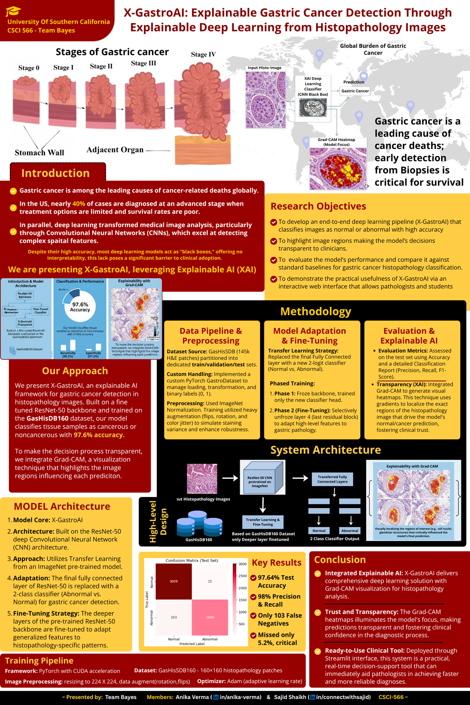

Explainable Medical AI / Computer Vision
X-GastroAI: explainable gastric screening
A clinician-facing AI pipeline for gastric cancer screening that pairs prediction with interpretable visual explanations.

Why explainability mattered
Medical AI systems cannot stop at a class label. For screening workflows, the model also needs to show why it produced a prediction, where the visual signal came from, and how a user should interpret confidence.
X-GastroAI was built around that principle: combine deep learning inference with Grad-CAM saliency maps so predictions are paired with a visual explanation layer.
Technical highlights
- ResNet-50 classifier for gastric cancer screening support.
- Grad-CAM overlays to make model attention visible and interpretable.
- Streamlit inference UI for a fast clinician-facing prototype experience.
- Real-time prediction flow focused on usability, confidence, and model transparency.
What I took away
The project reinforced a simple idea: model accuracy is only part of the product. In high-trust workflows, the surrounding system - input handling, explanation, UI clarity, and deployment ergonomics - determines whether the AI can actually be used.
React or ask a follow-up
Comments and reactions are powered by GitHub Discussions under the connectwithsajid brand.